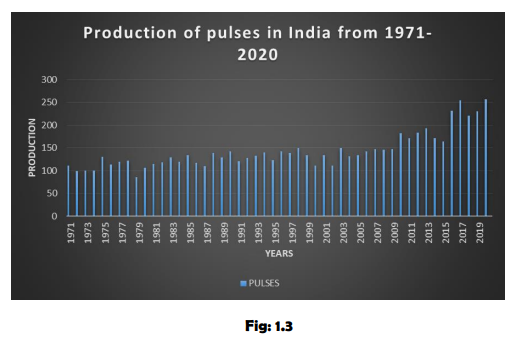
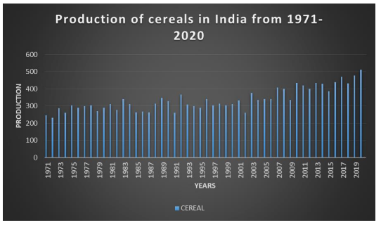
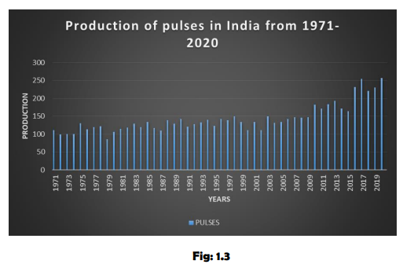
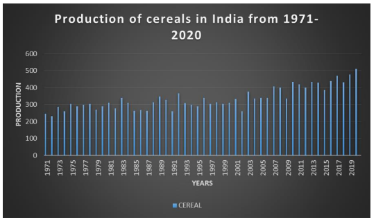
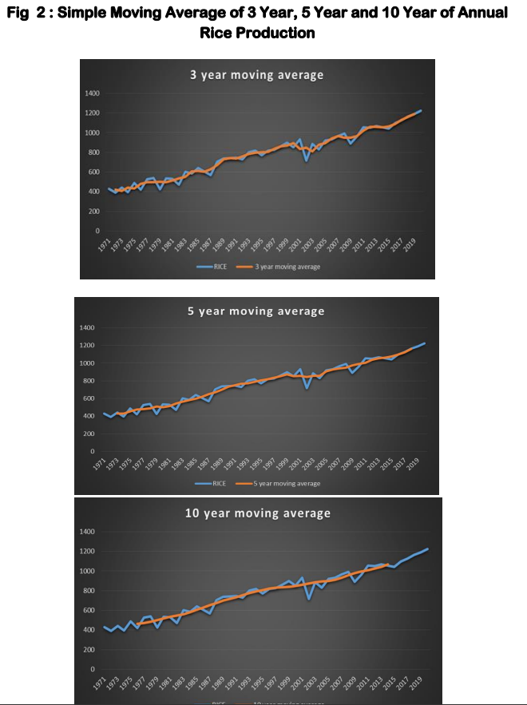
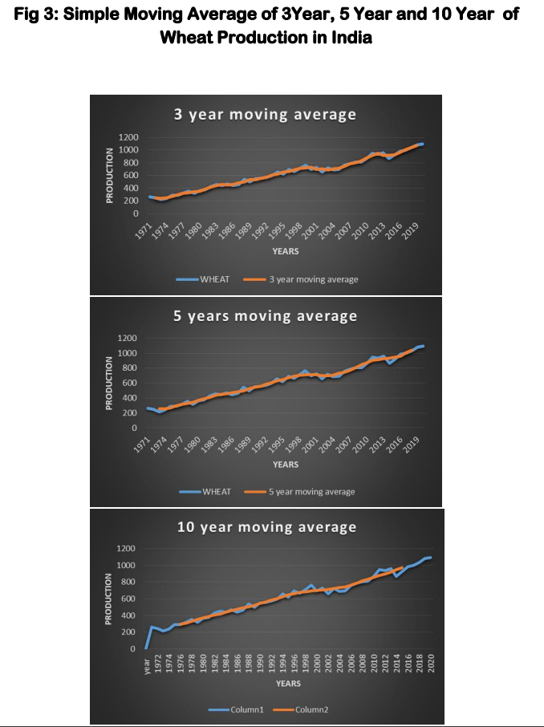
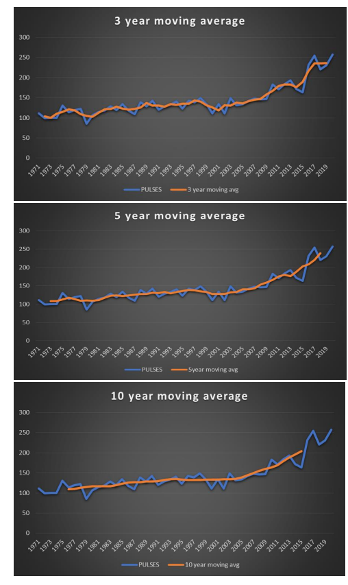
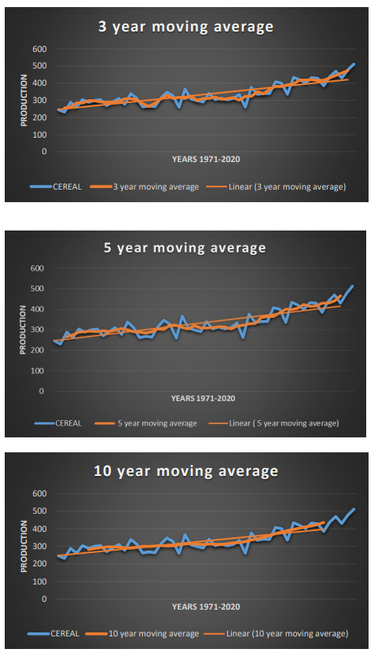

Food Production in India
Agriculture continues to be the backbone of the Indian economy - this is hardly an
extravagant statement.
With a population of 1.27 billion, India is the world's second most populous country after China.
Over two thirds of the country's population is directly dependent on agriculture. India is the world's
largest producer of milk, pulses, and jute and ranks as the second largest producer of wheat, rice,
cotton, groundnut, sugarcane, and horticulture crops. Agriculture and its allied sectors are the
largest sources of livelihood, and these account for 23% of the GDP and employed 59% of the
country's total workforce in 2016. According to World Bank Data 2018, India is the sixth largest
economy by nominal GDP and third largest by purchasing power parity (PPP).
In more developing countries (MDC) like India, the agricultural sector, its growth, and agricultural
production have been regarded as dominant prerequisites for economic growth. Several studies
have been conducted, and we have considered the agricultural production as a dominant
prerequisite. Since 1947, the agricultural sector has witnessed huge technological reforms,
however, despite this fact, the farmers' standards of living did not improve (Bandaru, 2019). The
government has also implemented the policy of regulated agricultural market, and a study on such
a regulated agricultural market by Rehman (2015) found that the farmers had a positive perception
towards the regulated markets. The idea behind implementing all the reforms was to increase
agricultural production so as to make the country self-sufficient in agricultural production and
also to generate employment opportunities in rural areas and increase the rural development so
that the whole process will lead to economic growth. As per available data on rural development
of India, it is essential to increase the agricultural production and generate employment
opportunities in rural India. It will mean more adequate food supplies and will reduce the imports
of the food items in the country. Moreover, when agricultural production will be in surplus, more
foreign currency will be available for the development of the industrial and services sectors of the
country. Inevitably, India's economic growth will increase. Consequently, the major improvements
in the performance of the Indian economy can be initiated by agricultural development.
In the present study, we have attempted to ascertain the relationship of agriculture production
with economic growth since 1971 - 2020 in India. The study is primarily based on the assumption
that agriculture is of utmost importance in the Indian economy.
- Wheat: Wheat is a major food crop in India. In 2019 - 20, Uttar Pradesh was the largest wheat
producing states in India. Uttar Pradesh produced 33815.5 million tonnes of wheat in 2019-20 and Madhya Pradesh was the second largest wheat producing states in India. Madhya Pradesh
produced 19607.1 million tonnes of wheat in the same year.
- Rice : India is the largest rice producing country in the world after China. Rice contributes to more than 40% of the country's total food grain production. In India, rice is grown in 43.86 million ha, the production level is 104.8million tonnes, and the productivity is about 2390 kg/ha (Ministry of Agriculture & Farmers Welfare, Department of Agriculture, Cooperation & Farmers Welfare, Directorate of Economics and Statistics, 2016).
- Pulses: Pulses are an important commodity, are rich in proteins, and are leguminous crops.
Pulses being rich in protein complement the cereals substantially for the pre-dominantly
vegetarian population of the country. Pulses can be produced with a minimum use of resources
and are mostly cultivated in rainfed areas as these do not require intensive irrigation facility. In
comparison with other crops and vegetables, pulses are grown in the fields left after satisfying
the demand for cereal/cash crops.
- Coarse Cereals: A variety of coarse cereals are grown throughout the country in different ecology, agroclimatic condition, but mostly as rainfed crop. Sorghum, pearl millet, maize, barley, finger millet and several small millets such as kodo millet, little millet, foxtail millet, proso millet and barnyard millet together called coarse cereals. Sorghum, pearl millet, finger millet, maize and small millets (barnyard millet, proso millet, kodo millet and foxtail millet) are also called nutricereals. Globally, average production of coarse grains is estimated to be about 1130.25 million tonnes during 2007-2011 and India contributed 3.6% (40.19 million tonnes) in global production of coarse grains and India ranks 4th after USA, China & Brazil.
Major Crops are Classified into:
Food crops
Rice, Wheat, Pulses and coarse cereals (sorghum, pearl millet,ragi, small millets,maize and barley)
Cash Crops
Sugarcane, Oilseeds, Horticulture crops, Tea, Coffee, Rubber, Cotton and Jute . Here we work with major food crops.
Blockchain in Agriculture:
Blockchain technology is revolutionizing supply chain management in agriculture, enhancing transparency, traceability, and food safety. In India, where quality control and traceability are crucial concerns, blockchain is being used to track the journey of agricultural products from farm to fork. By recording every transaction on an immutable ledger, blockchain ensures that consumers can verify the authenticity and origin of the food they consume. This not only builds trust but also incentivizes farmers to adhere to quality standards and sustainable practices.
 






